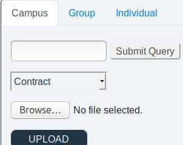

<p>Hello, I’m KorneelI’m a junior web developer at becode</p>
Multipage
I present you my home-made league of legends launcher imitation. This webpage was made by using SASS (this includes the use of CSS and HTML)
About-me
This is a project I made during my second week of the education. I present myself with the usage of CSS and HTML
Chessboard
This is a project I made during my second week of the education. I made a chessboard with the usage of CSS and HTML
Behind the scenes
This project was made for a figurative cliënt. We had to make an user-interface so the cliënt could upload and download easy.
Behind the scenes
This project was made for a figurative cliënt. We had to make an user-interface so the cliënt could upload and download easy.
